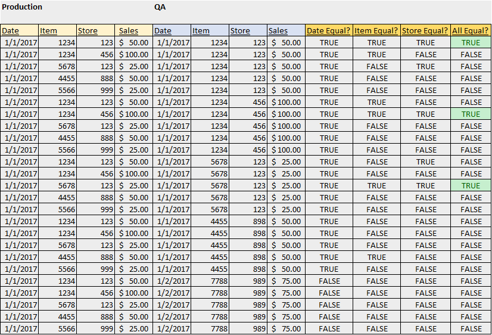

Section 2: INNER JOIN Operations - Deriving from Cartesian Product
In this exercise, I will be using two tables that have the same fields: Date, Item Number, Store Number, and Sales. The primary key of these tables is the composite key of Date, Item Number, and Store Number. For this example, assume the first table is a Production table and the second table is a QA table. As a Business Intelligence Analyst, this is a common exercise we undergo when making changes to various tables (for example, if the source system changes, joining the Production and QA tables ensures that the tables match record by record). The SQL query to create the two tables and populate them with data used in the examples that follow is shown below:
create database test;
drop table test.prod;
drop table test.qa;
create table test.prod (
dt date
,item_nbr int
,store_nbr int
,sales int
)
;
insert into test.prod (dt, item_nbr, store_nbr, sales)
values
('2017-01-01', 1234, 123, 50)
,('2017-01-01', 1234, 456, 100)
,('2017-01-01', 5678, 123, 25)
,('2017-01-01', 4455, 888, 50)
,('2017-01-01', 5566, 999, 25)
;
create table test.qa (
dt date
,item_nbr int
,store_nbr int
,sales int
)
;
insert into test.qa (dt, item_nbr, store_nbr, sales)
values
('2017-01-01', 1234, 123, 50)
,('2017-01-01', 1234, 456, 100)
,('2017-01-01', 5678, 123, 25)
,('2017-01-01', 4455, 898, 50)
,('2017-01-02', 7788, 989, 75)
;
I will start by going over an INNER JOIN operation in which all three fields are joined together. I will then go through one scenario in which only two fields are joined together and another scenario in which only one field is joined together. There may be use cases for not joining on all three fields, but it is important to understand how one can retrieve misleading and inaccurate results by not properly joining tables. The number of rows returned by a Cartesian Product will equal the number of records in the first table multiplied by the number of records in the second table. In this example, both tables have 5 records, so the Cartesian product will return 25 records. You can generate the Cartesian Product in two ways:
select *
from test.prod, test.qa
;
select *
from test.prod
cross join test.qa
;
Joining on all 3 fields (Proper Join)
You can think of this example by creating four new columns to the right of the Cartesian Results: one indicating if the Date column is equal, one indicating if the Item Number column is equal, one indicating if the Store Number column is equal, and one column indicating if all three columns are equal. If all three columns are equal, those rows will be returned in the INNER JOIN result sets. The Cartesian Product and Result Set are shown below:
